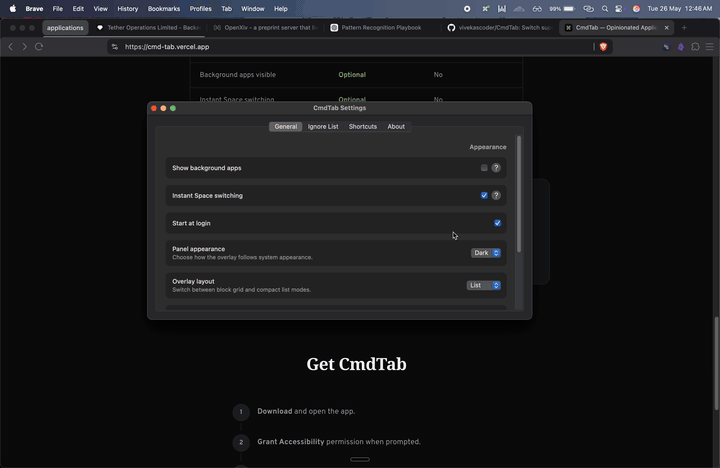

macOS App Switcher
Opinionated Application Launcher
Press Right ⌘ and a number. Use ←/→ to swap workspaces instantly.
“Use the unused Command key for the thing you do all day: switching apps.”
Two steps. Half a second.
Hold Right ⌘
The overlay appears — a numbered grid of every running app. Your left Command key stays untouched for normal shortcuts.
Press a number
Hit 1–9 or 0 to jump straight to that app. Add custom app shortcuts too, like O for Obsidian. No ⌘⇥ cycling, no searching.
CmdTab vs Cmd+Tab
| CmdTab | macOS Cmd+Tab | |
|---|---|---|
| Keystrokes to reach 7th app | 2 | 7–14 |
| Direct access | Yes (by number) | No (sequential) |
| Interferes with left ⌘ | No | No |
| Muscle-memory friendly | Yes (fixed order) | No (MRU order) |
| Background apps visible | Optional | No |
| Instant Space switching | Optional | No |
Optional
Jump Spaces without the slide.
Hold Right ⌘ and tap ← or → to swap workspaces instantly. Selecting an app can still jump to its Space when Instant Space switching is enabled.

Get CmdTab
Download and open the app.
Grant Accessibility permission when prompted.
Hold Right ⌘ and start switching.
Turn on Instant Space switching in Settings if you want cross-Space jumps without the animation.
Requires macOS 15.0 or later. Built for Apple Silicon and Intel.